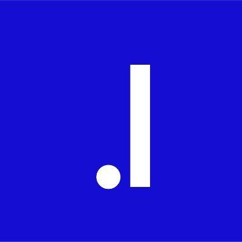
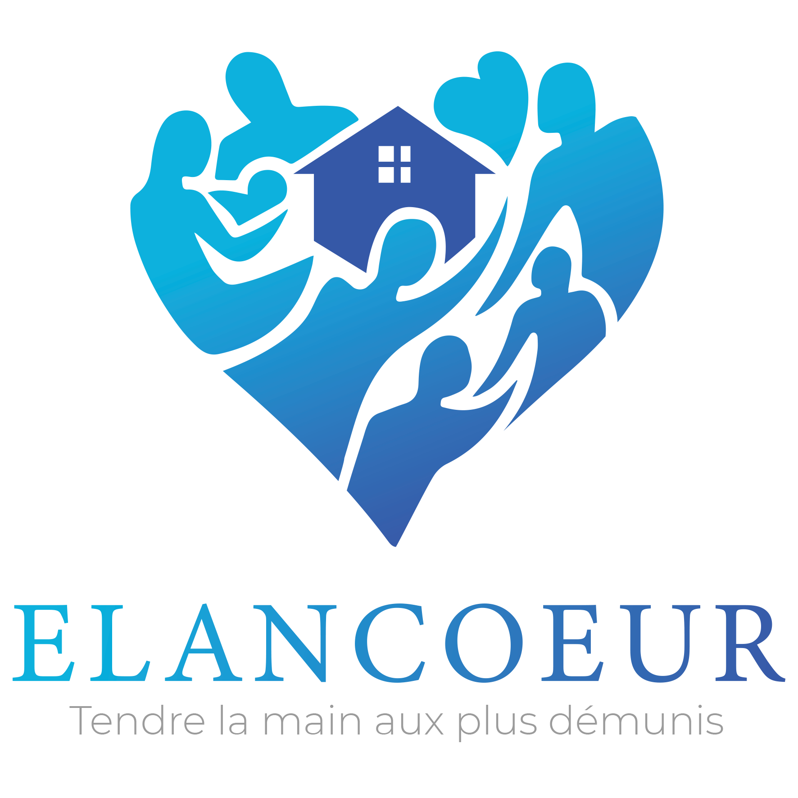
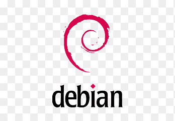
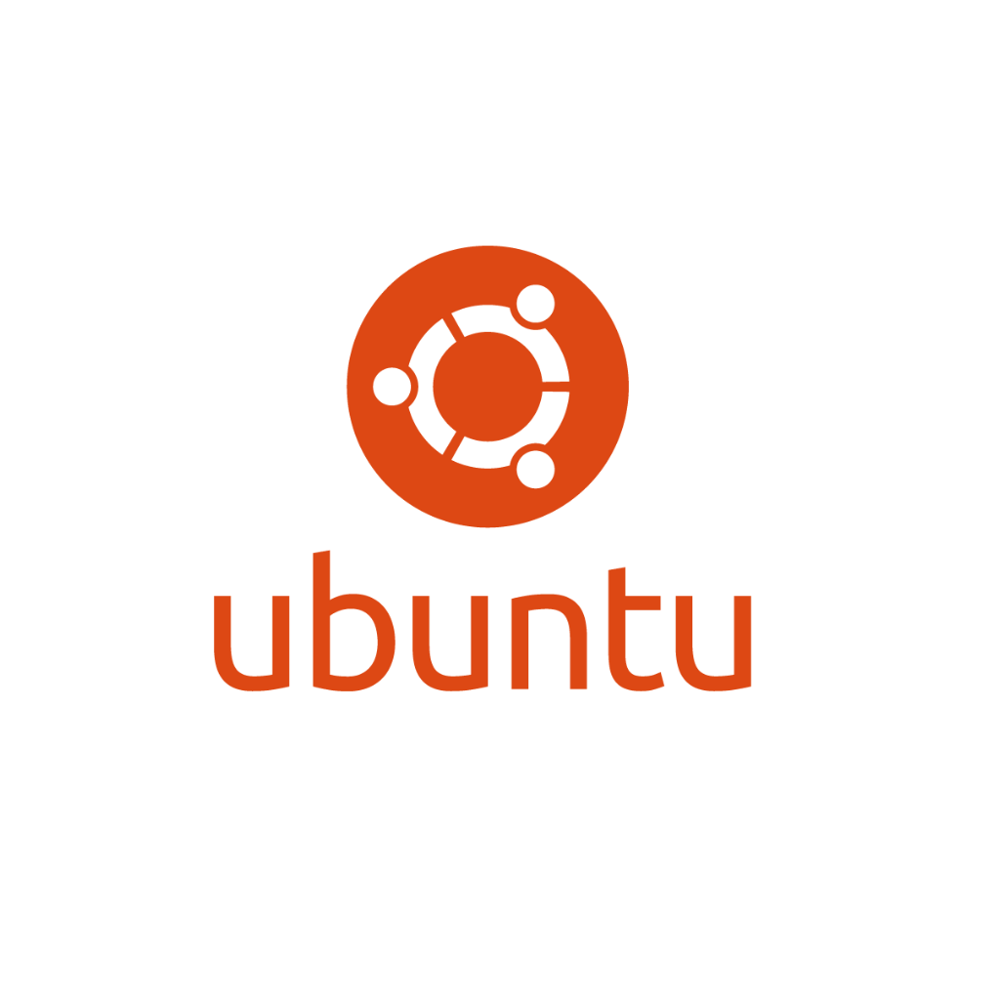

Ali Hemadi
Innover et sécuriser les systèmes, bienvenue dans mon univers : l'informatique.
À propos de moi
Je m'appelle Ali Hemadi, passionné d’informatique depuis l’enfance grâce à mon père. Actuellement en BTS SIO option SISR, je me spécialise dans les réseaux, la cybersécurité et l’administration systèmes.
Mon Parcours
BTS SIO - SISR
IPSSI SQY – Depuis octobre 2024
-
Spécialisation dans les systèmes, réseaux et la cybersécurité
Site Web
Baccalauréat Général
Lycée Descartes, Montigny-le-Bretonneux – 2022 à 2024
-
Spécialités : Mathématiques, NSI
Site Web
Aide Humanitaire
Association Elancœur – 2021
-
Aide aux personnes en difficulté (colis, vêtements, produits essentiels)
Site Web
Le BTS SIO et l'option SISR
Le BTS SIO (Services Informatiques aux Organisations) est une formation de deux ans incluant deux mois de stage en première année et une alternance en seconde année. Il propose deux spécialisations :
-
SLAM (Solutions Logicielles et Applications Métiers) : Développement d’applications et de sites web.
SISR (Solutions d’Infrastructure, Systèmes et Réseaux) : Installation de serveurs, gestion des réseaux et cybersécurité.
J’ai choisi l’option SISR car elle correspond à ma passion pour les systèmes, les réseaux et la sécurité informatique.
Mes Stages
J’ai effectué un stage du 28 avril au 25 juin 2025 chez Hub Services, une société spécialisée en maintenance et conseil informatique.
Mes missions ont consisté à :
- installer et configurer des switches, routeurs et points d'accès,
- déployer des câblages (cuivre, fibre optique),
- configurer des connexions LAN, WAN, Wi-Fi,
- simuler des réseaux sur Cisco Packet Tracer.
Mes Compétences
Sécurité, Réseaux & Télécom
 VirtualBox
VirtualBox  Linux Debian
 Cisco paquet tracer
Cisco paquet tracer  Ubuntu
 Windows / Windows Server
Windows / Windows Server Développement Fullstack & Mobile
 HTML5 / CSS3
HTML5 / CSS3  Bash
Bash Powershell
Powershell Python
Python
Base de Données, Cloud & Hébergement
 MySQL
MySQL  MariaDB
MariaDB
Environnement (IDE)
 Visual Studio
Visual Studio
Gestion de Projets & Documentation
 Trello
Trello Merise
Documentations 📄
Mes documentations en systèmes, réseaux et cybersécurité.
Mes Projets
Durant ma formation, j’ai participé à deux projets en groupe appelés ateliers de professionnalisation.
Le premier projet : création d’une entreprise fictive avec business plan, devis, et développement d’un site vitrine. J’étais responsable de la partie financière.
Le second projet : mise en place d’une infrastructure réseau pour la M2L (Maison des Ligues), avec VLAN et Wi-Fi temporaire. Ce projet a renforcé mes compétences en réseau et cybersécurité.
Veille Technologique : Les Ransomwares
Qu’est-ce qu’un Ransomware ?
Un ransomware est un logiciel malveillant qui chiffre les fichiers d’un système informatique ou bloque l’accès à celui-ci, en échange d’une rançon exigée à la victime. C’est l’une des cybermenaces les plus graves aujourd’hui, ciblant particuliers, entreprises et institutions.
Fonctionnement
- Le malware est souvent diffusé via un email de phishing, une pièce jointe infectée ou un site compromis.
- Une fois installé, il chiffre les fichiers du système ou verrouille l’écran de l’utilisateur.
- Un message s’affiche demandant une rançon, souvent en cryptomonnaie (Bitcoin, Monero...)
- Parfois, une menace de diffusion des données volées accompagne la demande (double extorsion).
Types de Ransomwares
- Crypto-ransomwares : chiffrent les fichiers (ex : WannaCry, Ryuk).
- Locker ransomwares : bloquent complètement l'accès à l'appareil.
- Doxware : menacent de publier les données sensibles si la rançon n’est pas payée.
Exemples d’attaques majeures
- WannaCry (2017) : attaque mondiale exploitant une faille Windows (EternalBlue).
- NotPetya (2017) : attaque ciblée contre l’Ukraine, causant des milliards de dégâts.
- Colonial Pipeline (2021) : attaque qui a paralysé une partie du réseau pétrolier américain.
Prévention et Protection
- Effectuer des sauvegardes régulières sur des supports déconnectés (offline).
- Mettre à jour les logiciels et systèmes pour corriger les vulnérabilités.
- Utiliser un antivirus/antimalware fiable.
- Former les utilisateurs à reconnaître les emails suspects (sensibilisation à la cybersécurité).
- Appliquer le principe du moindre privilège (limiter les droits administrateurs).
Outils de veille utilisés
- CERT-FR : alertes sur les vulnérabilités et incidents majeurs.
- Bleeping Computer : actualités sur les ransomwares.
- ZDNet Sécurité : analyses, tendances et conseils pratiques.
- Cybermalveillance.gouv.fr : plateforme d’assistance et de sensibilisation.
Les ransomwares évoluent rapidement et représentent un danger croissant. En tant que futur professionnel de l'informatique, il est crucial de maintenir une veille constante sur ce sujet pour se protéger et protéger les autres.
Fiche E4 - Tableau de synthèse
Contact
Mail : a.hemadi.pro@gmail.com
Téléphone : 07 45 06 85 66
Linkedin : Ali H.